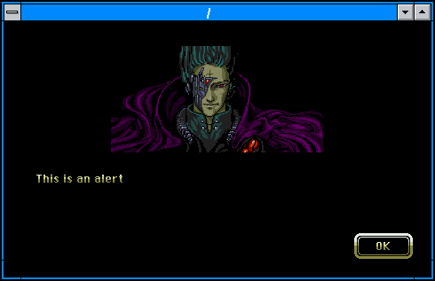
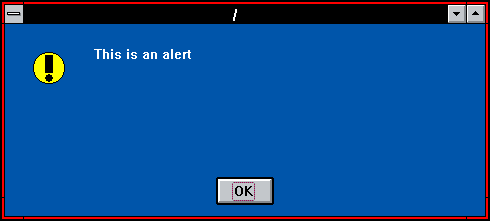
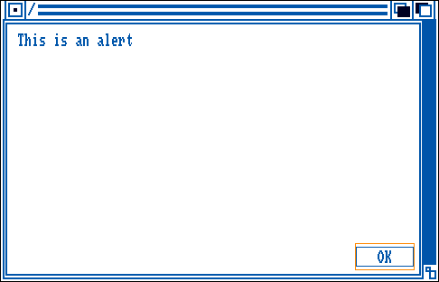
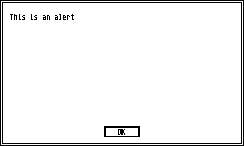
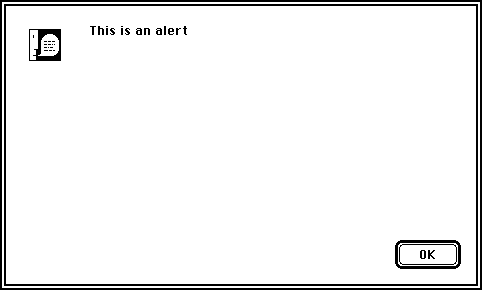
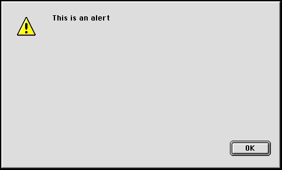
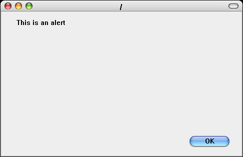

Hotdog LINUX
Hotdog LINUX
How To Show An Alert
From the shell, run the command:$ hotdog alert "This is an alert"
The second argument contains the text for the alert dialog.
If the second argument is omitted, then the text is read from STDIN.
$ echo "This is an alert" | hotdog alert
The style of alert will be determined by the environment variable HOTDOG_MODE.
To force an alert to be in a specific style:
$ HOTDOG_MODE="winmac" hotdog alert "This is an alert"

$ HOTDOG_MODE="hotdogstand" hotdog alert "This is an alert"

$ HOTDOG_MODE="amiga" hotdog alert "This is an alert"

$ HOTDOG_MODE="atarist" hotdog alert "This is an alert"

$ HOTDOG_MODE="macclassic" hotdog alert "This is an alert" $ HOTDOG_MODE="maccolor" hotdog alert "This is an alert"

$ HOTDOG_MODE="macplatinum" hotdog alert "This is an alert"

$ HOTDOG_MODE="aqua" hotdog alert "This is an alert"
